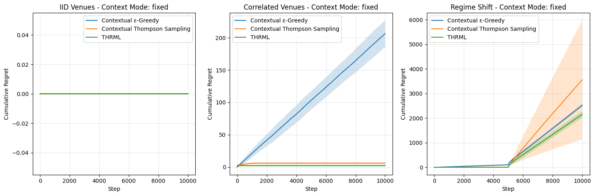
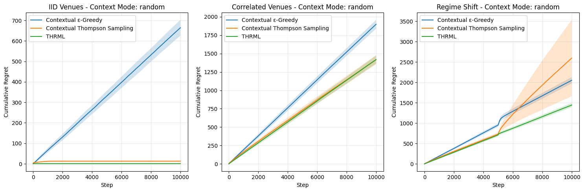

Show the code
# Install dependencies for Colab environment
# Install dependencies for Colab T4 GPU
# Note: Run this cell only on Colab
!pip install --quiet jax jaxlib
!pip install --quiet thrml
!pip install --quiet matplotlib
This notebook implements a conditional routing experiment using synthetic data to evaluate the performance of THRML against traditional multi-armed bandit baselines in a contextual decision-making setting.
The experiment simulates an order routing scenario where an agent must select the best venue to route orders. At each step: 1. A context is observed (one venue’s outcome is revealed for free) 2. The agent must select which other venue to route to 3. The agent receives a reward and updates its belief model
| Parameter | Value | Description |
|---|---|---|
n_venues |
3 | Number of trading venues |
n_steps |
10,000 | Steps per experiment run |
n_seeds |
200 | Independent runs for statistical significance |
discount_factor |
0.995 | Forgetting factor for non-stationary adaptation |
learning_rate |
0.05 | THRML learning rate |
coupling_decay |
0.995 | Decay factor for edge weights (regularization) |
steps_per_sample |
4 | Gibbs sampling thinning parameter |
propagation_damping |
0.3 | Mean-field signal propagation factor |
The notebook produces regret plots comparing all three agents across the three scenarios for both context modes.
# Install dependencies for Colab environment
# Install dependencies for Colab T4 GPU
# Note: Run this cell only on Colab
!pip install --quiet jax jaxlib
!pip install --quiet thrml
!pip install --quiet matplotlib# Imports for JAX, THRML, and visualization
import jax
import jax.numpy as jnp
from jax import random, lax, vmap, jit
import numpy as np
import matplotlib.pyplot as plt
import time
from typing import NamedTuple, Tuple, Optional, List, Dict
from functools import partial
# THRML imports (JAX-compatible)
from thrml import SpinNode, Block, SamplingSchedule, sample_states
from thrml.models import IsingEBM, IsingSamplingProgram, hinton_init# Verify GPU availability for optimized JAX execution
print(f"JAX Backend: {jax.default_backend()}")
try:
print(f"Devices: {jax.devices()}")
except:
print("Warning: No GPU devices found. Running on CPU with JAX optimization.")JAX Backend: gpu
Devices: [CudaDevice(id=0)]# Configuration settings for the experiments and agents
class ExperimentConfig(NamedTuple):
n_venues: int = 3 # Number of trading venues participating in the simulation
n_context_venues: int = 1
n_steps: int = 10000 # Total simulation steps per independent run
n_seeds: int = 200
window_size: int = 200 # Memory depth for incremental covariance tracking
beta: float = 1.0
n_warmup: int = 50
n_samples: int = 100
steps_per_sample: int = 4
discount_factor: float = 0.995 # Exponential decay factor for adapting to non-stationary shifts
learning_rate: float = 0.05 # Step size for bias and edge weight updates
coupling_decay: float = 0.995
propagation_damping: float = 0.3
context_mode: str = "fixed"
damp_coupling: bool = True
class ScenarioConfig(NamedTuple):
name: str
correlation_weight: float
biases: jnp.ndarray
regime_shift_step: Optional[int]
regime_shift_biases: Optional[jnp.ndarray]class AgentState_CEG(NamedTuple):
successes: jnp.ndarray
counts: jnp.ndarray
class AgentState_CTS(NamedTuple):
alphas: jnp.ndarray
betas: jnp.ndarray
class AgentState_THRML(NamedTuple):
biases: jnp.ndarray
weights: jnp.ndarray
history_buffer: jnp.ndarray
history_ptr: jnp.ndarray
full_history_count: jnp.ndarray
cov_sum: jnp.ndarray
pair_counts: jnp.ndarraydef thrml_init(n_venues, window_size=200):
"""
Standardized initialization for THRML Agent State.
Ensures memory depth is consistent across experiments.
"""
return AgentState_THRML(
biases=jnp.zeros(n_venues),
weights=jnp.zeros((n_venues * (n_venues - 1)) // 2),
history_buffer=jnp.zeros((window_size, n_venues)),
history_ptr=jnp.array(0, dtype=jnp.int32),
full_history_count=jnp.array(0, dtype=jnp.int32),
cov_sum=jnp.zeros((n_venues, n_venues)),
pair_counts=jnp.zeros((n_venues, n_venues))
)
def build_thrml_infra(n_venues, config):
"""
Pre-calculates JAX-optimized graph structures.
Uses a fixed program structure that clamps the first n_context_venues.
Selection logic will permute nodes to satisfy this structure.
"""
nodes = [SpinNode() for _ in range(n_venues)]
edges = [(nodes[i], nodes[j]) for i in range(n_venues) for j in range(i+1, n_venues)]
schedule = SamplingSchedule(
n_warmup=config.n_warmup,
n_samples=config.n_samples,
steps_per_sample=config.steps_per_sample
)
# Static program structure for conditional selection: always clamp first K nodes
clamped_block = Block(nodes[:config.n_context_venues])
free_blocks = [Block([nodes[i]]) for i in range(config.n_context_venues, n_venues)]
dummy_model = IsingEBM(nodes, edges, jnp.zeros(n_venues), jnp.zeros(len(edges)), jnp.array(config.beta))
prog_conditional = IsingSamplingProgram(dummy_model, free_blocks, clamped_blocks=[clamped_block])
# Static program structure for joint update: no clamped nodes
# Note: Use serial schedule because the graph is fully connected (all-to-all).
# Nodes must be updated sequentially to satisfy Gibbs validity.
serial_blocks = [Block([n]) for n in nodes]
prog_joint = IsingSamplingProgram(dummy_model, serial_blocks, clamped_blocks=[])
return {
'nodes': nodes,
'edges': edges,
'sched': schedule,
'prog': prog_conditional,
'joint_prog': prog_joint,
'full_block': [Block(nodes)]
}
def thrml_update(state, outcomes, obs_mask, model_node_moms, model_edge_moms,
discount_factor, beta, learning_rate,
propagation_damping=0.3, coupling_decay=1.0, damp_coupling=True):
"""
Perform THRML weight update with incremental covariance tracking.
Reduces complexity from O(W*N^2) to O(N^2) per step.
"""
n_venues = state.biases.shape[0]
triu_idx = jnp.triu_indices(n_venues, 1)
# 1. Update Biases
J = jnp.zeros((n_venues, n_venues)).at[triu_idx].set(state.weights)
J = J + J.T
# Mean-Field Signal Propagation
influence = propagation_damping * learning_rate * beta * (J @ (outcomes * obs_mask)) * (1.0 - obs_mask)
new_biases = (state.biases * discount_factor) + (learning_rate * beta * (outcomes * obs_mask - model_node_moms * obs_mask)) + influence
# 2. Incremental Covariance Update
old_obs = state.history_buffer[state.history_ptr]
old_present = (old_obs != 0).astype(jnp.float32)
new_obs = outcomes * obs_mask
new_present = obs_mask
# Subtract old contribution, Add new contribution
new_cov_sum = state.cov_sum - jnp.outer(old_obs, old_obs) + jnp.outer(new_obs, new_obs)
new_pair_counts = state.pair_counts - jnp.outer(old_present, old_present) + jnp.outer(new_present, new_present)
# 3. Update Buffer
new_buffer = state.history_buffer.at[state.history_ptr].set(new_obs)
new_ptr = (state.history_ptr + 1) % state.history_buffer.shape[0]
new_count = jnp.minimum(state.full_history_count + 1, state.history_buffer.shape[0])
# Calculate empirical correlations
emp_cov = new_cov_sum / jnp.maximum(new_pair_counts, 1.0)
emp = emp_cov[triu_idx]
# 4. Update Weights
pairs_observed = new_pair_counts[triu_idx] > 0
weights_grad = (emp - model_edge_moms)
innovation = beta * learning_rate * weights_grad
innovation = jnp.where(damp_coupling, innovation, 0.0)
new_weights = (state.weights + jnp.where(pairs_observed, innovation, 0.0)) * discount_factor * coupling_decay
return AgentState_THRML(new_biases, new_weights, new_buffer, new_ptr, new_count, new_cov_sum, new_pair_counts)def get_context_index(context_venues, context_outcomes, n_venues, n_context_venues):
# Optimized Dense Mapping: Venue * 2 + Outcome
# This matches the historical experiment
venue_idx = context_venues[0]
outcome_bit = (context_outcomes[0] > 0).astype(jnp.int32)
return venue_idx * 2 + outcome_bit# Contextual Epsilon Greedy agent implementation
def ceg_init(config: ExperimentConfig) -> AgentState_CEG:
# Contexts = 2^N masks * 2^K outcome combinations
n_contexts = config.n_venues * 2 # Dense mapping
return AgentState_CEG(
successes=jnp.zeros((n_contexts, config.n_venues)),
counts=jnp.zeros((n_contexts, config.n_venues))
)
def ceg_select(
state: AgentState_CEG,
key: jax.Array,
context_idx: int,
routing_mask: jnp.ndarray,
epsilon: float = 0.1
) -> int:
"""Select venue given context, using epsilon-greedy on context-specific estimates."""
n_venues = state.counts.shape[1]
# Get estimates for this context
context_successes = state.successes[context_idx]
context_counts = state.counts[context_idx]
means = jnp.where(
context_counts > 0,
context_successes / context_counts,
0.5 # Optimistic init
)
best_venue = jnp.argmax(means + routing_mask)
# Epsilon-greedy exploration
k_explore, k_rand = jax.random.split(key)
should_explore = jax.random.uniform(k_explore) < epsilon
random_venue = random.categorical(k_rand, jnp.zeros(n_venues) + routing_mask)
return jnp.where(should_explore, random_venue, best_venue)
def ceg_update(
state: AgentState_CEG,
context_idx: int,
selected_venue: int,
outcome: jnp.ndarray, # Outcome of selected venue
discount_factor: float
) -> AgentState_CEG:
"""
Update context-specific estimates for the selected venue only.
Only the (context, selected_venue) pair is updated.
"""
# Apply decay to all
decayed_successes = state.successes * discount_factor
decayed_counts = state.counts * discount_factor
# Update only the (context, venue) pair
new_counts = decayed_counts.at[context_idx, selected_venue].add(1.0)
success_val = jnp.where(outcome > 0, 1.0, 0.0)
new_successes = decayed_successes.at[context_idx, selected_venue].add(success_val)
return AgentState_CEG(successes=new_successes, counts=new_counts)# Contextual Thompson Sampling agent implementation
def cts_init(config: ExperimentConfig, prior_alpha: float=1.0, prior_beta: float=1.0) -> AgentState_CTS:
n_contexts = config.n_venues * 2 # Dense mapping
return AgentState_CTS(
alphas=jnp.ones((n_contexts, config.n_venues)) * prior_alpha,
betas=jnp.ones((n_contexts, config.n_venues)) * prior_beta
)
def cts_select(
state: AgentState_CTS,
key: jax.Array,
context_idx: int,
routing_mask: jnp.ndarray
) -> int:
"""Select venue given context, using Thompson Sampling on context-specific posteriors."""
# Get posteriors for this context
context_alphas = state.alphas[context_idx]
context_betas = state.betas[context_idx]
# Sample from Beta posteriors
samples = jax.random.beta(key, context_alphas, context_betas)
return jnp.argmax(samples + routing_mask)
def cts_update(
state: AgentState_CTS,
context_idx: int,
selected_venue: int,
outcome: jnp.ndarray,
discount_factor: float
) -> AgentState_CTS:
"""Update context-specific posteriors for the selected venue only."""
# Apply decay
decayed_alphas = state.alphas * discount_factor
decayed_betas = state.betas * discount_factor
# Update based on outcome
alpha_inc = jnp.where(outcome > 0, 1.0, 0.0)
beta_inc = jnp.where(outcome > 0, 0.0, 1.0)
new_alphas = decayed_alphas.at[context_idx, selected_venue].add(alpha_inc)
new_betas = decayed_betas.at[context_idx, selected_venue].add(beta_inc)
return AgentState_CTS(alphas=new_alphas, betas=new_betas)def thrml_select_conditional(state, key, cvs, cos, infra, config):
n = config.n_venues
triu_idx = jnp.triu_indices(n, 1)
# 1. Create permutation mapping CVs to the first K indices
priorities = jnp.zeros(n, dtype=jnp.int32)
priorities = priorities.at[cvs].set(jnp.arange(config.n_context_venues))
is_context = jnp.zeros(n, dtype=jnp.bool_).at[cvs].set(True)
priorities = jnp.where(is_context, priorities, jnp.arange(n) + n)
perm = jnp.argsort(priorities)
inv_perm = jnp.argsort(perm)
def get_permuted_weights():
J = jnp.zeros((n, n)).at[triu_idx].set(state.weights)
J = J + J.T
J_p = J[perm][:, perm]
return J_p[triu_idx]
b_p = state.biases[perm]
w_p = lax.cond(jnp.all(perm == jnp.arange(n)), lambda: state.weights, get_permuted_weights)
# 2. Sample using the conditional program (from pre-built infra)
model = IsingEBM(infra['nodes'], infra['edges'], b_p, w_p, jnp.array(config.beta))
updated_prog = IsingSamplingProgram(
model,
infra['prog'].gibbs_spec.superblocks,
infra['prog'].gibbs_spec.clamped_blocks
)
clamped_state = [(cos > 0).astype(jnp.bool_)]
init = hinton_init(random.split(key)[0], model, updated_prog.gibbs_spec.free_blocks, ())
samples = sample_states(random.split(key)[1], updated_prog, infra['sched'], init, clamped_state, infra['full_block'])[0]
# 3. Decode results
spins = (2 * samples.astype(jnp.float32) - 1).reshape(samples.shape[0], -1)[:, inv_perm]
margs = jnp.mean(spins, axis=0)
probs = (margs + 1) / 2
routing_mask = jnp.zeros(n).at[cvs].set(-1e9)
return jnp.argmax(probs + routing_mask), probs
def thrml_sample_joint(state, key, infra, config):
"""Perform UNCLAMPED sampling for unbiased weight updates."""
model = IsingEBM(infra['nodes'], infra['edges'], state.biases, state.weights, jnp.array(config.beta))
updated_prog = IsingSamplingProgram(
model,
infra['joint_prog'].gibbs_spec.superblocks,
infra['joint_prog'].gibbs_spec.clamped_blocks
)
k1, k2 = random.split(key)
init = hinton_init(k1, model, updated_prog.gibbs_spec.free_blocks, ())
samples = sample_states(k2, updated_prog, infra['sched'], init, [], infra['full_block'])[0]
spins = (2 * samples.astype(jnp.float32) - 1).reshape(samples.shape[0], -1)
node_moms = jnp.mean(spins, axis=0)
edge_moms = ((spins.T @ spins) / config.n_samples)[jnp.triu_indices(state.biases.shape[0], 1)]
return node_moms, edge_momsdef sample_outcomes_jit(biases, correlation_weight, beta, key, sim_struct_helper):
"""
Generates venue outcomes using an Ising model to introduce correlations.
"""
nodes, edges, full_block = sim_struct_helper
# Weights represent correlations between all venues
n_venues = biases.shape[0]
n_edges = (n_venues * (n_venues - 1)) // 2
weights = jnp.full((n_edges,), correlation_weight)
model = IsingEBM(nodes, edges, biases, weights, jnp.array(beta))
# Note: Use serial schedule for valid Gibbs sampling on fully connected graph
serial_blocks = [Block([n]) for n in nodes]
prog = IsingSamplingProgram(model, serial_blocks, [])
# Single Gibbs sample to get the current market state
sched = SamplingSchedule(n_warmup=100, n_samples=1, steps_per_sample=1)
k1, k2 = random.split(key)
init = hinton_init(k1, model, serial_blocks, [])
samples = sample_states(k2, prog, sched, init, [], full_block)[0]
# Return both discrete outcomes AND continuous latent scores for argmax
# Latent score approximation: Bias + Field influence + Noise (using uniform noise for tie-breaking)
# Since we can't easily extract internal fields, we add small noise to spins to break ties uniquely
discrete_outcomes = 2 * samples[0].astype(jnp.float32) - 1
# THRML-Based Oracle Definition:
# The 'best' venue is defined by the Local Field (gamma) as per
# the Ising EBM specification: gamma_i = bias_i + sum_{j != i} J_ij * s_j
total_spin_sum = jnp.sum(discrete_outcomes)
neighbor_influence = correlation_weight * (total_spin_sum - discrete_outcomes)
local_field = biases + neighbor_influence
# Add small tie-breaker for unique argmax
k3 = random.split(k2)[0]
tie_breaker = jax.random.uniform(k3, (n_venues,), minval=-1e-5, maxval=1e-5)
latent_scores = local_field + tie_breaker
return discrete_outcomes, latent_scoresdef run_single_seed_experiment(
master_seed: jax.Array,
config: ExperimentConfig,
scenario_config: ScenarioConfig,
infra: Dict,
sim_struct_helper: Tuple
) -> dict:
# 2. Initialize carries
rng = master_seed
agent_ceg = ceg_init(config)
agent_cts = cts_init(config)
agent_thrml = thrml_init(config.n_venues, window_size=config.window_size)
Carry = NamedTuple("Carry", [
("rng", jax.Array),
("agent_ceg", AgentState_CEG),
("agent_cts", AgentState_CTS),
("agent_thrml", AgentState_THRML),
])
init_carry = Carry(rng, agent_ceg, agent_cts, agent_thrml)
def step_fn(carry: Carry, step_idx: int):
rng = carry.rng
current_biases = lax.select(
step_idx >= scenario_config.regime_shift_step if scenario_config.regime_shift_step is not None else False,
scenario_config.regime_shift_biases if scenario_config.regime_shift_biases is not None else scenario_config.biases,
scenario_config.biases
)
rng, k_context, k_sim, k_agents, k_update = random.split(rng, 5)
outcomes, latent_scores = sample_outcomes_jit(
current_biases,
scenario_config.correlation_weight,
config.beta,
k_sim,
sim_struct_helper
)
is_fixed_mode = (config.context_mode == "fixed")
context_venues = lax.cond(
is_fixed_mode,
lambda: jnp.arange(config.n_context_venues),
lambda: jax.random.permutation(k_context, jnp.arange(config.n_venues))[:config.n_context_venues]
)
# --- Oracle & Reward Calculation ---
# 1. Global Winner Determination (Unmasked)
# Allows Context Venue to be the winner (Outcome = +1.0)
oracle_best_global = jnp.argmax(latent_scores)
rewards = jnp.where(jnp.arange(config.n_venues) == oracle_best_global, 1.0, -1.0)
# 2. Context Signal
context_outcomes = rewards[context_venues]
context_idx = get_context_index(context_venues, context_outcomes, config.n_venues, config.n_context_venues)
# 3. Agent Availability Masking
# Prevent agents from routing to the context venue
routing_mask = jnp.zeros(config.n_venues).at[context_venues].set(-1e9)
# 4. Oracle Reward Calculation (Best *Available* Venue)
# If Global Winner was the Context Venue, the best available reward will be -1.0.
# This results in 0 Regret (Optimal decision given constraints).
oracle_best_available = jnp.argmax(latent_scores + routing_mask)
oracle_reward = rewards[oracle_best_available]
k_ceg, k_cts, k_thrml = random.split(k_agents, 3)
act_ceg = ceg_select(carry.agent_ceg, k_ceg, context_idx, routing_mask)
act_cts = cts_select(carry.agent_cts, k_cts, context_idx, routing_mask)
# THRML Selection: Conditional (Clamped) sampling
act_thrml, _ = thrml_select_conditional(
carry.agent_thrml, k_thrml,
context_venues, context_outcomes,
infra, config
)
# THRML Update Preparations: Unclamped (Joint) sampling
# This ensures the model learns the TRUE market correlations, not the conditional ones.
model_node_moms, model_edge_moms = thrml_sample_joint(carry.agent_thrml, k_update, infra, config)
r_ceg = oracle_reward - rewards[act_ceg]
r_cts = oracle_reward - rewards[act_cts]
r_thrml = oracle_reward - rewards[act_thrml]
# Note: Baselines update based on the *observed reward* (argmax result), NOT the raw Ising outcome
next_ceg = ceg_update(carry.agent_ceg, context_idx, act_ceg, rewards[act_ceg], config.discount_factor)
next_cts = cts_update(carry.agent_cts, context_idx, act_cts, rewards[act_cts], config.discount_factor)
# THRML update: Uses the 'argmax' result as the ground truth for the selected node
# Context nodes are clamped to the competitive winner label (context is based on rewards, not raw spins)
obs_mask = jnp.zeros(config.n_venues).at[context_venues].set(1.0).at[act_thrml].set(1.0)
# Construct the 'observed' vector for THRML training
# Competitive Alignment: THRML learns to identify the WINNER
training_outcomes = rewards
observed_data = training_outcomes * obs_mask
next_thrml = thrml_update(
carry.agent_thrml, observed_data, obs_mask,
model_node_moms=model_node_moms, model_edge_moms=model_edge_moms,
discount_factor=config.discount_factor,
beta=config.beta,
learning_rate=config.learning_rate,
propagation_damping=config.propagation_damping,
coupling_decay=config.coupling_decay,
damp_coupling=config.damp_coupling
)
next_carry = Carry(rng, next_ceg, next_cts, next_thrml)
regrets = jnp.array([r_ceg, r_cts, r_thrml])
return next_carry, regrets
steps = jnp.arange(config.n_steps)
final_carry, step_regrets = lax.scan(step_fn, init_carry, steps)
return {
"Contextual ε-Greedy": jnp.cumsum(step_regrets[:, 0]),
"Contextual Thompson Sampling": jnp.cumsum(step_regrets[:, 1]),
"THRML": jnp.cumsum(step_regrets[:, 2])
}def run_experiment_vmapped(
config: ExperimentConfig,
scenario: ScenarioConfig
):
print(f"Compiling and running scenario: {scenario.name} on GPU...")
print(f" Context mode: {config.context_mode}")
start_t = time.time()
# Build Static Infrastructure once outside the loop
infra = build_thrml_infra(config.n_venues, config)
sim_struct_helper = (infra['nodes'], infra['edges'], infra['full_block'])
# Create seeds
master = random.key(42)
seeds = random.split(master, config.n_seeds)
# Partial application for static config and infra
run_one = partial(run_single_seed_experiment,
config=config,
scenario_config=scenario,
infra=infra,
sim_struct_helper=sim_struct_helper)
# JIT + VMAP -> The magic of JAX
run_all = jit(vmap(run_one))
# Execute
results = run_all(seeds)
# Ensure computation is done
results = jax.tree_util.tree_map(lambda x: x.block_until_ready(), results)
elapsed = time.time() - start_t
print(f"Finished {config.n_seeds} seeds x {config.n_steps} steps in {elapsed:.4f}s")
return resultsdef plot_all_results(all_results, context_mode: str):
n = len(all_results)
fig, axes = plt.subplots(1, n, figsize=(5*n, 5))
if n == 1: axes = [axes]
for ax, (name, res) in zip(axes, all_results.items()):
steps = jnp.arange(res['THRML'].shape[1])
for agent in ['Contextual ε-Greedy', 'Contextual Thompson Sampling', 'THRML']:
data = res[agent] # [n_seeds, n_steps]
mean = jnp.mean(data, axis=0)
std = jnp.std(data, axis=0)
# Prettier labels
label = agent
ax.plot(steps, mean, label=label)
ax.fill_between(steps, mean-std, mean+std, alpha=0.2)
ax.set_title(f"{name} - Context Mode: {context_mode}")
ax.set_xlabel("Step")
ax.set_ylabel("Cumulative Regret")
ax.legend()
ax.grid(True, alpha=0.3)
plt.tight_layout()
filename = f'conditional_sor_{context_mode}_results.png'
plt.savefig(filename)
print(f"Saved plot to {filename}")
plt.show()# Updated Scenarios for N=3
scenarios = [
ScenarioConfig(
"IID Venues",
0.0,
jnp.array([0.5, 0.0, -0.5]),
None, None
),
ScenarioConfig(
"Correlated Venues",
0.4,
jnp.array([0.5, 0.0, -0.5]),
None, None
),
ScenarioConfig(
"Regime Shift",
0.4,
# Start: Venue 0 is high success, Venue 2 is low success
jnp.array([0.5, 0.0, -0.5]),
5000,
# Shift: Venue 0 becomes the worst, Venue 2 becomes the best
jnp.array([-0.5, 0.0, 0.5])
)
]print("" + "="*80)
print("CONDITIONAL ROUTING EXPERIMENT - FIXED CONTEXT (Venue 0)")
print("="*80)
all_results_fixed = {}
for scenario in scenarios:
conf = ExperimentConfig(context_mode="fixed")
res = run_experiment_vmapped(conf, scenario)
all_results_fixed[scenario.name] = res
plot_all_results(all_results_fixed, "fixed")================================================================================
CONDITIONAL ROUTING EXPERIMENT - FIXED CONTEXT (Venue 0)
================================================================================
Compiling and running scenario: IID Venues on GPU...
Context mode: fixed
Finished 200 seeds x 10000 steps in 167.1170s
Compiling and running scenario: Correlated Venues on GPU...
Context mode: fixed
Finished 200 seeds x 10000 steps in 165.5142s
Compiling and running scenario: Regime Shift on GPU...
Context mode: fixed
Finished 200 seeds x 10000 steps in 166.3660s
Saved plot to conditional_sor_fixed_results.png
print("" + "="*80)
print("CONDITIONAL ROUTING EXPERIMENT - RANDOM CONTEXT")
print("="*80)
all_results_random = {}
for scenario in scenarios:
conf = ExperimentConfig(context_mode="random")
res = run_experiment_vmapped(conf, scenario)
all_results_random[scenario.name] = res
plot_all_results(all_results_random, "random")================================================================================
CONDITIONAL ROUTING EXPERIMENT - RANDOM CONTEXT
================================================================================
Compiling and running scenario: IID Venues on GPU...
Context mode: random
Finished 200 seeds x 10000 steps in 166.1384s
Compiling and running scenario: Correlated Venues on GPU...
Context mode: random
Finished 200 seeds x 10000 steps in 166.2799s
Compiling and running scenario: Regime Shift on GPU...
Context mode: random
Finished 200 seeds x 10000 steps in 165.7862s
Saved plot to conditional_sor_random_results.png
# Final Regret Summary Table
labels = ["Contextual ε-Greedy", "Contextual Thompson Sampling", "THRML"]
print("" + "="*80)
print(f"{ 'SCENARIO':<25} | { 'MODE':<10} | { 'ε-Greedy':<10} | {'Thompson':<10} | {'THRML':<10}")
print("-" * 80)
for mode_name, results_dict in [("fixed", all_results_fixed), ("random", all_results_random)]:
for scenario_name, res in results_dict.items():
row = f"{scenario_name:<25} | {mode_name:<10}"
for agent in labels:
final_regret = jnp.mean(res[agent][:, -1])
row += f" | {float(final_regret):<10.4f}"
print(row)
print("=" * 80)================================================================================
SCENARIO | MODE | ε-Greedy | Thompson | THRML
--------------------------------------------------------------------------------
IID Venues | fixed | 0.0000 | 0.0000 | 0.0000
Correlated Venues | fixed | 206.4000 | 5.9900 | 2.2100
Regime Shift | fixed | 2520.4700 | 3555.4800 | 2154.0701
IID Venues | random | 664.1200 | 12.8400 | 0.9600
Correlated Venues | random | 1897.9299 | 1416.1100 | 1418.2400
Regime Shift | random | 2052.6199 | 2596.8799 | 1444.4800
================================================================================